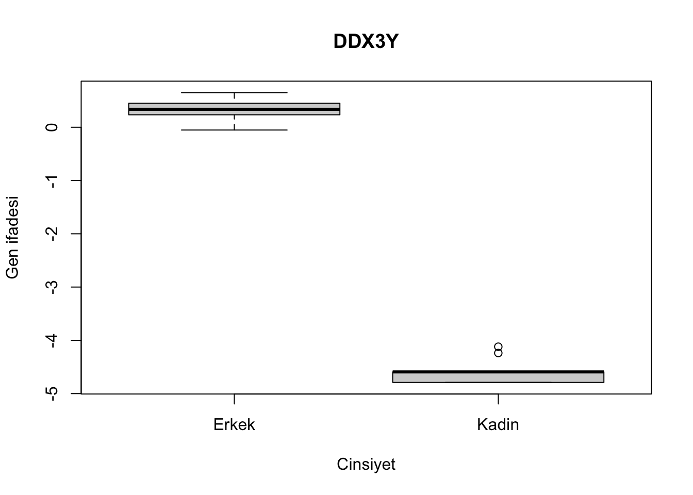
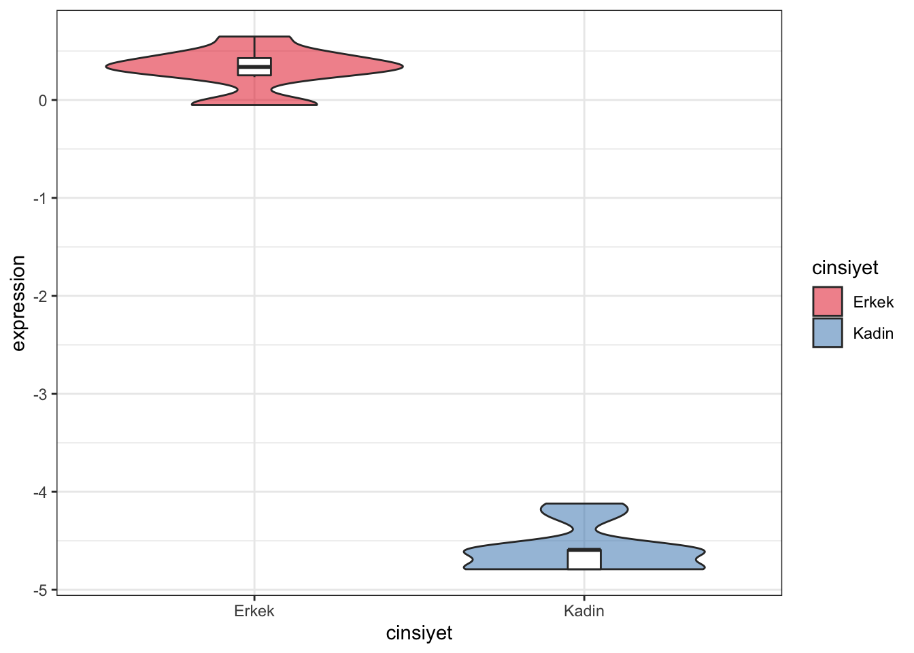

Bölüm 8 Biyolojik cinsiyete gore farklilik gosteren gen analizi
Diyelim ki sadece dogum sonrasi donemde 20 sonrasi ve 40 yas oncesi yasta kadin ve erkekler arasinda farkli gen ifadesi gosteren genlerle ilgileniyoruz.
subsamp = names(which(yas>=20 & yas<40))
subexp = genexpr_qn[,subsamp]
subyas = yas[subsamp]
subcins = cinsiyet[subsamp]
table(subcins)## subcins
## Erkek Kadin
## 41 12Kadin ve erkek sayisindaki fark cok fazla. Hem erkek hem de kadinlarin icinden rastegele 10ar birey secip analiz yapalim (- rastgele secim yapmayi gostermek icin!).
erkek = sample(names(which(subcins == 'Erkek')),10,replace = F)
kadin = sample(names(which(subcins == 'Kadin')),10,replace = F)
subsamp = c(erkek,kadin)
subexp = genexpr_qn[,subsamp]
subyas = yas[subsamp]
subcins = cinsiyet[subsamp]
table(subcins)## subcins
## Erkek Kadin
## 10 10cinsiyetfark = apply(subexp, 1, function(x){
tres = t.test(x~subcins)
c(tres$statistic, tres$p.value)
})dim(cinsiyetfark)## [1] 2 17160cinsiyetfark = t(cinsiyetfark)
head(cinsiyetfark)## t
## CTSD 1.3642735 0.19234196
## EEF2 1.7886468 0.09072626
## VIM -0.3731643 0.71380830
## GSN 0.3197629 0.75284137
## RPN2 1.5259575 0.15179503
## POLR2A 0.4085646 0.68768136colnames(cinsiyetfark) = c('t','p')
cinsiyetfark = cbind(cinsiyetfark,p.adjust(cinsiyetfark[,'p'],method= 'fdr'))Hangi genler yasla istatistiksel olarak anlamli degisim gosteriyor?
anlamli = names(which(cinsiyetfark[,3]<=0.05))
length(anlamli)## [1] 12Sadece 12 gen anlamli fark gostermis.
maxfark = names(which.max(abs(cinsiyetfark[,1])))
cinsiyetfark[maxfark,]## t p
## 4.989918e+01 1.635048e-17 1.402871e-13boxplot(subexp[maxfark,]~subcins, ylab = 'Gen ifadesi', main = maxfark,
xlab = 'Cinsiyet')
Figuru kaydetmek icin:
pdf('./cinsiyetfark.pdf')
boxplot(subexp[maxfark,]~subcins, ylab = 'Gen ifadesi', main = maxfark,
xlab = 'Cinsiyet')
dev.off()## quartz_off_screen
## 2Ayni figuru ggplotta cizelim:
mydat = data.frame(expression = subexp[maxfark,],
cinsiyet = subcins[colnames(subexp)],
yas = yas[colnames(subexp)])
ggplot(mydat, aes(x = cinsiyet, y = expression)) +
geom_violin(aes(fill = cinsiyet), alpha = 0.5) +
scale_fill_brewer(type='qual', palette = 6)+
geom_boxplot(outlier.shape = NA, width = 0.1) +
theme_bw()